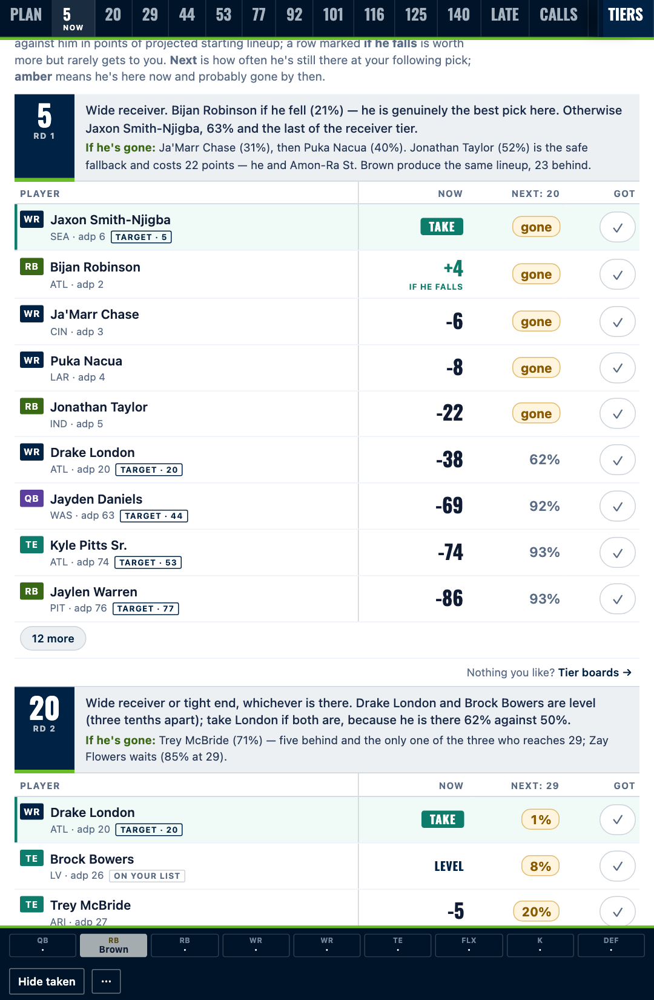

Free & open source · Fantasy football
Your league.
Your picks.
Your draft plan.
Know who to target, who to keep, and whether your guy will last another round.
The sample opens instantly. Your own plan uses an AI assistant with code execution.

Build it before your draft. Bring it to your draft. Recommendations are computed in advance. The board records your selections; it does not rerun simulations or sync with your draft platform.
A worked example · Pick 5 · 12-team half PPR
One pick.
Two possible teams.
You start with the same draft room. Change your first pick, then see the team the simulator builds around it.
Who would you take?
Both players were available in this saved draft. Chase Brown is already kept in round 6.
Green rows are players who do not appear in the other starting lineup.
Your projected starting lineup
ONE SIMULATED DRAFTSee both saved lineups
| Slot | Take Achane | Take Nacua |
|---|---|---|
| QB | Jayden Daniels | Jayden Daniels |
| RB1 | De'Von Achane | Chase Brown |
| RB2 | Chase Brown | Breece Hall |
| WR1 | Zay Flowers | Puka Nacua |
| WR2 | Tetairoa McMillan | Zay Flowers |
| TE | Trey McBride | Trey McBride |
| FLEX | Parker Washington | Parker Washington |
| K | Tyler Loop | Chase McLaughlin |
| DEF | New England Defense | New England Defense |
One example explains the method; it does not tell you which player is best. These are saved projections, not actual season results. The published board averages many simulated drafts and can rank these picks differently. This example uses a fixed seed and the simulator’s adaptive later-pick policy. Inputs and reproduction.
A model you can
check yourself.
In 800 simulated drafts, following the board added 109 projected starting-lineup points versus modeled autopicking.
An internal comparison, using the same projections and opponent model. It is not a real-world backtest or a promise for your season.
Reproduce the benchmark →The adaptive policy makes new decisions at every pick. The downloadable board is a prepared plan.
Bring it to draft night.
Cross off taken players. Mark your pick. Keep your lineup in view.
Manual tracking with recommendations prepared in advance. Your picks stay in this browser when local storage is available.
Explore the board ↗Bring your league.
Leave with a plan.
Use the skill in Claude with code execution enabled. Download the packaged skill, upload it under Customize → Skills, then describe your league.
The project is free. Creating a personal plan requires an assistant account with code execution and sufficient usage. Your text stays on this page until you copy it into your assistant.
Useful for your draft?
Star the project so you can find it again. Send the sample to a friend who’s still debating their first pick.
☆ Star on GitHub